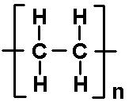

ESTRUCTURA DEL HDPE
El HDPE tiene un grado de ramificación bajo, entre 1 y 10 ramas por cada 1000 átomos de carbono. Son ramificaciones con cadenas cortas.
Tiene una elevada cristalinidad debido a su poca ramificación, y por tanto hay poca distancia entre macromoléculas vecinas haciendo que este polietileno tenga una elevada densidad y resistencia que le da el nombre high-density-poly-Ethylene. Se trata de un plástico con elevada dureza, pero tiene una baja resistencia al impacto y a la elongación.
<

PROPIEDADES